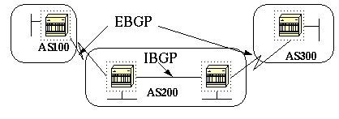

Введение
В данном документе приведен пример использования протокола граничных шлюзов (BGP).
Предварительные условия
Требования:
Для данного документа нет особых требований.
Используемые компоненты
Данный документ не ограничен отдельными версиями программного и аппаратного обеспечения.
Условные обозначения
Дополнительные сведения об условных обозначениях см. в разделе Технические советы Cisco.
Практический пример использования BGP

Протокол BGP, определенный в RFC 1771 , позволяет организовывать междоменную маршрутизацию без петель между автономными системами (AS). AS – это совокупность маршрутизаторов под управлением единой службы технического администрирования. Для обмена информацией о маршрутах в пределах AS в маршрутизаторах могут использоваться различные внутренние протоколы шлюзов (IGP). Для маршрутизации пакетов за пределы AS маршрутизаторы могут использовать внешний протокол маршрутизации.
Как работает BGP?
В качестве протокола транспортного уровня BGP использует TCP, порт 179. Два маршрутизатора BGP создают соединение TCP друг с другом. Эти маршрутизаторы являются равноправными. Равноправные маршрутизаторы обмениваются сообщениями для инициирования и подтверждения параметров соединения.
Маршрутизаторы BGP обмениваются информацией о доступности сетей. Эта информация главным образом состоит из указаний на полные пути, по которым должен пройти маршрут для достижения сети назначения. Пути представляют собой номер автономных систем BGP. Эта информация помогает в построении графа автономных систем, который не содержит петель. Граф также показывает, где нужно применить политики маршрутизации, чтобы наложить на поведение маршрутизаторов некоторые ограничения.
Любые два маршрутизатора, организующие TCP-соединение для обмена информацией о маршрутизации BGP, являются "равноправными" или "соседями". Сначала равноправные узлы BGP обмениваются полными таблицами маршрутизации BGP. После этого обмена при изменении таблиц маршрутизации равноправные узлы рассылают обновления с изменениями. BGP хранит номер версии таблицы BGP. Номер версии совпадает у всех одноранговых узлов BGP. Номер версии изменяется всякий раз, когда BGP обновляет таблицу при изменении информации маршрутизации. Передача пакетов поддержания сообщения позволяет убедиться в том, что соединение между равноправными узлами BGP действует. При возникновении или особых условий рассылаются пакеты уведомлений.
eBGP и iBGP
Если в AS несколько спикеров BGP, AS может выполнять роль транзитной службы для других автономных систем. Как показано на схеме в данном разделе, AS200 является транзитной AS для AS100 и AS300.
Для передачи информации во внешние AS доступность сетей должна быть гарантирована. Чтобы гарантировать доступность сетей, выполняются следующие процессы:
• Обмен информацией внутренними равноправными узлами BGP (iBGP) между маршрутизаторами в системе AS
• Перераспределение информации BGP в IGP, работающим в AS
Когда BGP работает между маршрутизаторами, принадлежащими двум разным AS, это называется внешним BGP (eBGP). Когда BGP работает между маршрутизаторами, принадлежащими одной AS, это называется iBGP.
Включение маршрутизации BGP
Чтобы включить и настроить BGP, необходимо выполнить описанные ниже действия.
Предположим, что нам нужно два маршрутизатора, RTA и RTB, общающихся при помощи BGP.
Формирование соседей BGP
Два маршрутизатора BGP становятся соседями после того, как маршрутизаторы установят TCP-соединение друг с другом. TCP-соединение необходимо для того, чтобы два равноправных маршрутизатора начали обмениваться информацией о маршрутах.
После организации TCP-соединения маршрутизаторы передают сообщения инициирования для обмена значениями. Значения, которыми обмениваются маршрутизаторы, содержат номер AS, версию BGP, которая работает в маршрутизаторе, идентификатор BGP маршрутизатора и интервал обмена сообщениями поддержания соединения. После подтверждения и принятия этих значений происходит установление соединения между соседями. Любое состояние, отличное от Established, указывает на то, что маршрутизаторы не стали соседями и что маршрутизаторы не могут обмениваться обновлениями BGP.
Для установления TCP-соединения введите команду neighbor:
neighbor IP-адрес remote-as номер
Номер в команде – это номер AS маршрутизатора, к которому нужно подключиться с использованием BGP. IP-адрес – это адрес следующего перехода при прямом подключении для eBGP. Для iBGP IP-адрес – это любой IP-адрес другого маршрутизатора.
Два IP-адреса, используемых в командах neighbor для равноправных маршрутизаторов, должны обладать возможностью доступа друг к другу. Одним способом проверки доступности является использование расширенной команды ping между двумя IP-адресами. Для расширенной команды ping маршрутизатор, на котором она запущена, использует в качестве адреса источника IP-адрес, задаваемый командой neighbor. Маршрутизатор должен использовать этот адрес, а не IP-адрес интерфейса, с которого отправляется пакет.
При наличии каких-либо изменений конфигурации BGP необходимо сбросить соединение с соседом, чтобы новые параметры вступили в силу.
• clear ip bgp адрес
Примечание: адрес – это адрес соседа.
• clear ip bgp *
Данная команда удаляет соединения со всеми соседями.
По умолчанию сессии BGP начинаются с использования 4 версии BGP и при необходимости выполняется согласование с предыдущими версиями. Можно отменить согласование и явно указать версию BGP, которую маршрутизаторы будут использовать для соединений с соседями. В режиме настройки маршрутизатора введите следующую команду:
neighbor {IP-адрес | имя группы} version значение
Здесь приведен пример настройки с использованием команды neighbor:

RTA#
router bgp 100
neighbor 129.213.1.1 remote-as 200
RTB#
router bgp 200
neighbor 129.213.1.2 remote-as 100
neighbor 175.220.1.2 remote-as 200
RTC#
router bgp 200
neighbor 175.220.212.1 remote-as 200
В данном примере в RTA и в RTB работает eBGP. В RTB и RTC работает iBGP. Номер удаленной AS не указывает либо на внешнюю, либо на внутреннюю AS, что указывает либо на eBGP, либо на iBGP. Кроме того, между равноправными узлами eBGP прямое соединение, а между равноправными узлами iBGP прямого соединения нет. Маршрутизаторам iBGP прямое соединение не требуется. Однако должен быть одинаковый IGP, который позволит двум соседям обмениваться информацией друг с другом.
В данном разделе приведен пример информации, отображаемой командой show ip bgp neighbors.
Примечание: обратите особое внимание состояние BGP. Любое состояние, отличное от Established, указывает на то, что обмен информацией между соседями не налажен.
Примечание: кроме того, обратите внимание на следующее:
• Значение BGP version равно 4
• Идентификатор удаленного маршрутизатора remote router ID
Этот номер является самым большим значением IP-адреса маршрутизатора или самым большим адресом обратной связи интерфейса, если он есть.
• Версия таблицы table version
Значение table version указывает на состояние таблицы. Каждый раз при поступлении новой информации версия таблицы увеличивается. Постоянное увеличение версии указывает на наличие постоянного переключения маршрута, который приводит к постоянному обновлению маршрутов.
# show ip bgp neighbors
BGP neighbor is 129.213.1.1, remote AS 200, external link
BGP version 4, remote router ID 175.220.12.1
BGP state = Established, table version = 3, up for 0:10:59
Last read 0:00:29, hold time is 180, keepalive interval is 60 seconds
Minimum time between advertisement runs is 30 seconds
Received 2828 messages, 0 notifications, 0 in queue
Sent 2826 messages, 0 notifications, 0 in queue
Connections established 11; dropped 10